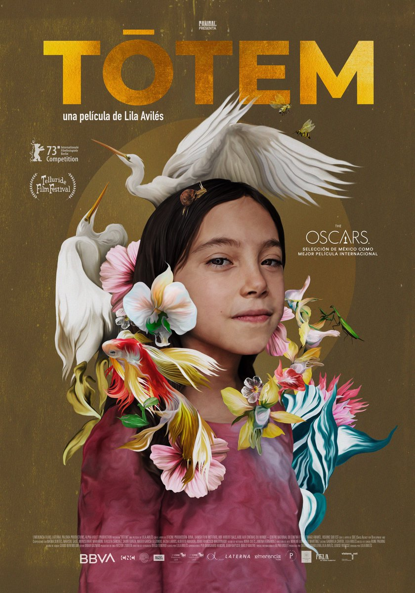
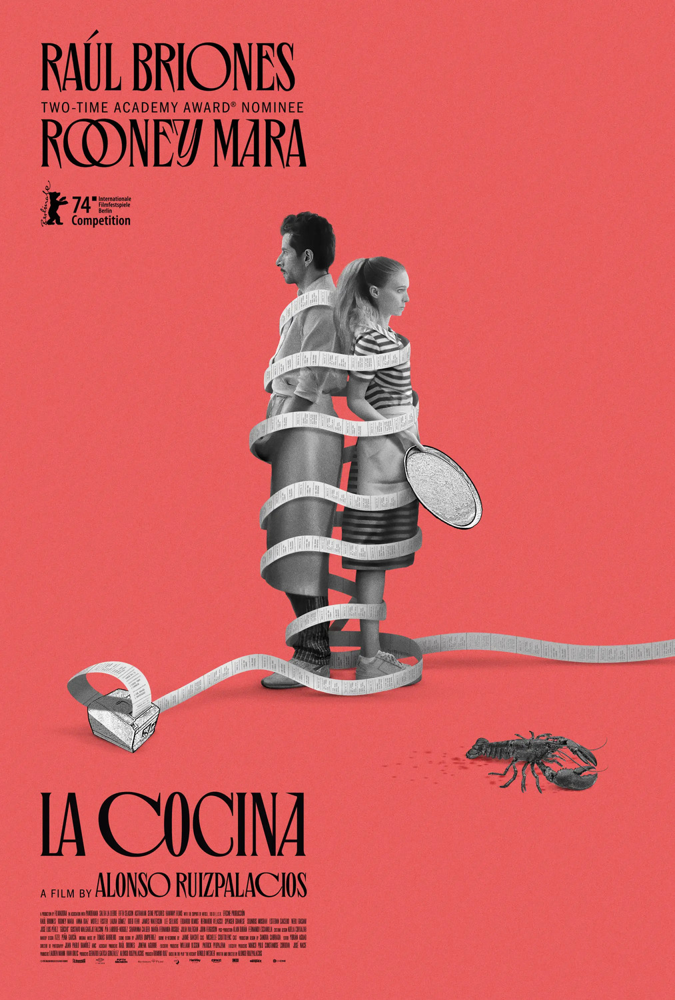
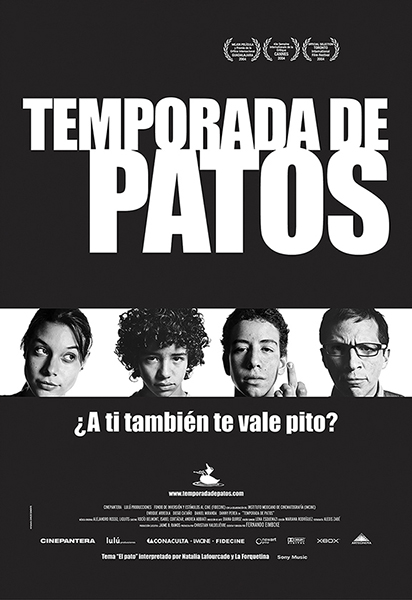
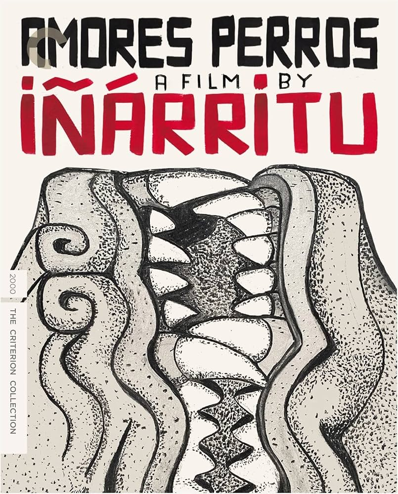
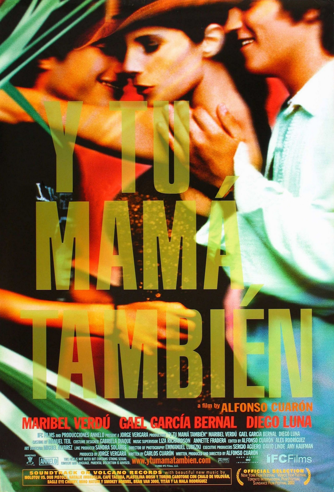

El mundo aplaude lo que México lleva siglos sabiendo contar.
Ver películas
2023 • Drama/Ficción
Sigue la historia de Sol, una niña de siete años que pasa el día en la casa de su abuelo ayudando a sus tías con los preparativos de una fiesta sorpresa

2024 • Drama
Un robo en la caja de The Grill, restaurante para turistas de Nueva York, precipita el suspenso y la tragedia.

2004 • Comedia/Drama
A solas un fin de semana tranquilo, Flama y Moko, dos mejores amigos, de catorce años, se entretienen con refrescos, revistas para adultos y videojuegos.

2000 • Suspenso/Crimen
Un terrible accidente automovilístico enlaza a tres personas de clases sociales distintas con algo en común: el amor, la pérdida y los perros.

2001 • Romance/Comedia
Los adolescentes Tenoch y Julio conocen a la seductora Luisa y se la llevan a hacer un viaje a la playa donde tratarán de conquistarla o lo que pase en el camino.
La cinematografía mexicana ha dejado huella desde el Cine de Oro, cuando Gabriel Figueroa retrató el cielo y el rostro de México con una belleza inconfundible. Hoy, talentos como Rodrigo Prieto llevan esa mirada al mundo, conquistando premios y demostrando que la luz mexicana tiene voz propia.